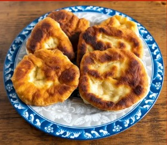
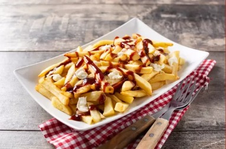
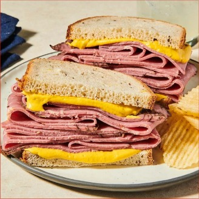
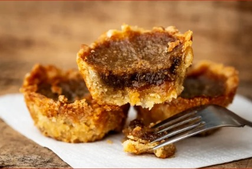

Tradition autochtone & métisse
Bannock
Un pain traditionnel très présent dans différentes régions du Canada, avec de nombreuses variantes familiales.
Cuisine & patrimoine
Découvrez six spécialités canadiennes et québécoises à travers leur histoire, une recette écrite et une vidéo.
DécouvrirDu Québec aux traditions de l’Ouest
Chaque carte présente le plat ou le produit, les ingrédients essentiels, les étapes de préparation et une vidéo.
Au menu

Tradition autochtone & métisse
Un pain traditionnel très présent dans différentes régions du Canada, avec de nombreuses variantes familiales.

Grand classique du Québec
Des frites croustillantes, du fromage en grains et une sauce chaude : un incontournable de la cuisine québécoise.

Spécialité montréalaise
De fines tranches de bœuf fumé servies dans un pain de seigle, généralement avec de la moutarde jaune.

Dessert canadien
De petites tartelettes garnies d’une préparation riche, beurrée et caramélisée, emblématiques de la pâtisserie canadienne.
Symbole du Canada
Produit à partir de la sève des érables, le sirop d’érable est particulièrement associé au Québec et à la saison des sucres.
Spécialité montréalaise
Plus fins et souvent plus sucrés que leurs cousins new-yorkais, les bagels montréalais sont bouillis dans une eau au miel avant cuisson.